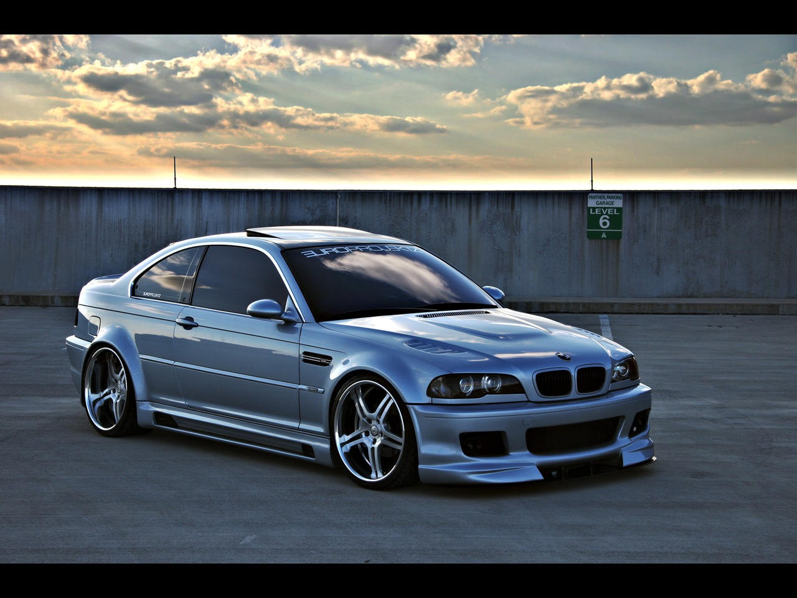
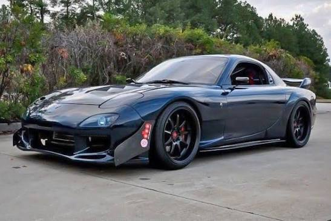
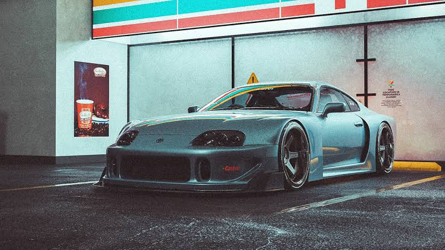
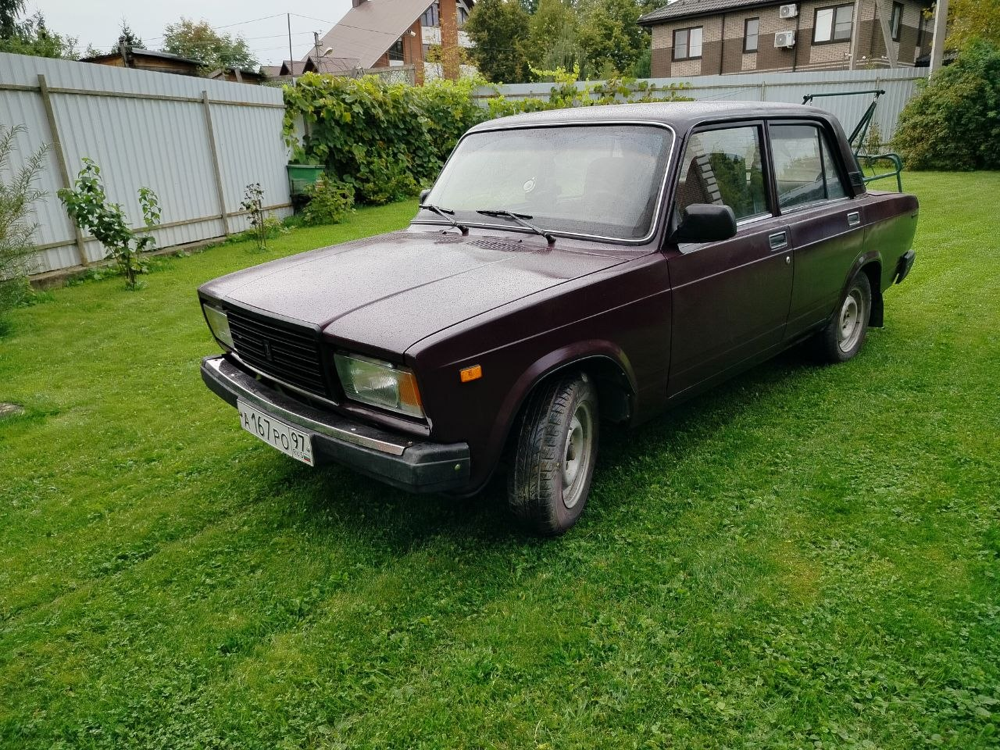
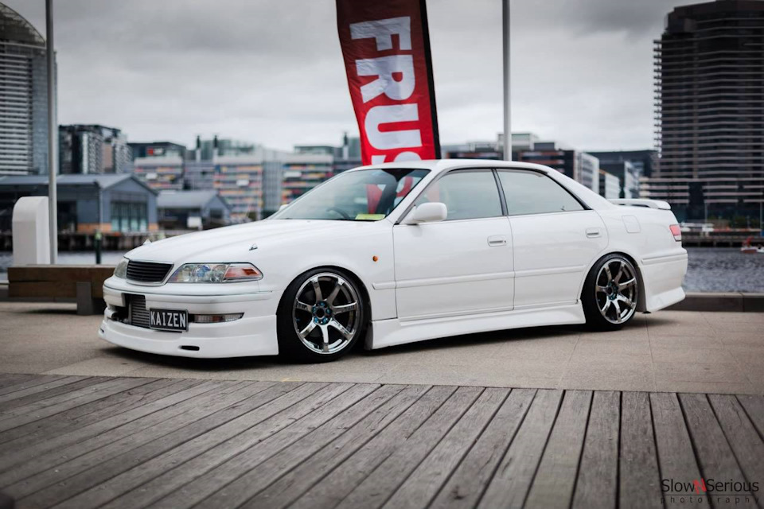
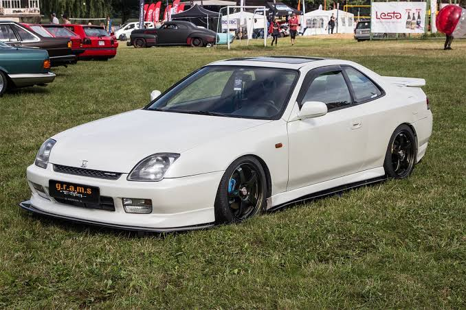
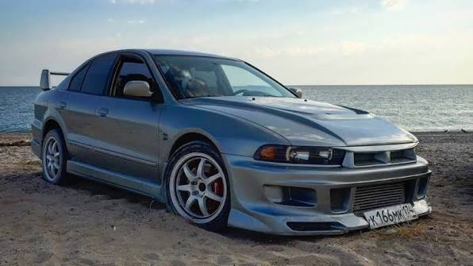

PROJECT 001
PROJECT 001DRIFT SPEC
NISSAN SILVIA S15
Подготовка подвески, охлаждения и внешнего вида для дрифт-концепта.
Подробнее о проектеOUR BUILDS / 01—09
Каждый проект — отдельная история. Выбирай направление, изучай сборки и вдохновляйся.
PROJECT 001Подготовка подвески, охлаждения и внешнего вида для дрифт-концепта.
Подробнее о проекте
PROJECT 002Посадка, колёса, внешний стайлинг и обслуживание ходовой части.
Подробнее о проекте PROJECT 003
PROJECT 003Аэродинамика, тормоза и сбалансированная дорожная конфигурация.
Подробнее о проекте
PROJECT 004Концепция лёгкого купе с роторным двигателем и спортивной настройкой.
Подробнее о проекте
PROJECT 005Проект с упором на силовую установку, охлаждение и трансмиссию.
Подробнее о проекте
PROJECT 006Классика с индивидуальной окраской, колёсами и доработанным салоном.
Подробнее о проекте
PROJECT 007Переосмысление культового японского седана: сдержанная аэродинамика, колёса и заниженная посадка.
Подробнее о проекте
PROJECT 008Спортивный образ Prelude: обвес, посадка и колёса в духе японского street-тюнинга.
Подробнее о проекте
PROJECT 009Японский седан с ярким характером: спортивный обвес, колёса и продуманная посадка.
Подробнее о проектеПо вашему запросу ничего не найдено. Попробуйте изменить фильтр.